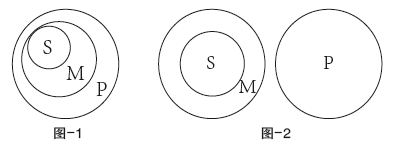
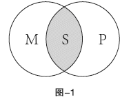
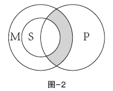
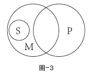

在演绎推理中，最早发现的也最常见的就是直言三段论。
直言三段论是借助于一个共同概念，把两个直言判断联结起来，从而得出结论的演绎推理。例如：
任何植物都包含纤维素；
无论哪个水螅都不包含纤维素；
所以，无论哪个水螅都不是植物。
直言三段论的三个名词各有不同的位置，起着不同的作用，并有不同的名称：结论中的主词叫“小词”，用S表示；结论中的宾词叫“大词”，用P表示；前提中出现两次而在结论中不出现的名词叫“中词”，用M表示。
中词在前提中，把大词和小词联结起来，起媒介作用，从而使我们能得出结论。
两个前提分为大前提和小前提。含有大词的是大前提，含有小词的叫小前提。一般说来，大前提表示一般原理，小前提表示具体情况。直言三段论就是由一般性前提推出个别性结论。
直言三段论之所以能从前提必然地推出结论，是因为它以直言三段论的公理为依据。所谓公理是不证自明的道理。例如在平面几何中，“整体大于局部”“两点间距离最短”等，就是不证自明的公理。直言三段论的公理是：
凡对一类事物有所肯定，则对该类事物中每一对象也有所肯定；凡对一类事物有所否定，则对该类事物中每一个对象也有所否定。
直言三段论的公理是客观事物的最一般、最普遍的关系在人们意识中的反映；是在人类亿万次重复的实践中被总结出来的，并不断为实践所证明。
下图表示三段论公理的两个方面：

图 -1 图 -2
在图-1中，一类事物M具有属性P，那M 类事物中每一个对象S一定具有属性P；S类也如此。例如：
凡金属（M）都导电（P）；
铁（S）是金属（M）；
所以，铁（S）导电（P）。
在图-2中，一类事物M不具有属性P，那M类事物中每一个对象，也一定不具有属性P，包括S类。例如：
哺乳动物（M）都不是用鳃呼吸（P）；
鲸（S）是哺乳动物（M）；
所以，鲸（S）不是用鳃呼吸（P）。
（1）每个直言三段论只能有三个名词。
这条规则主要是指前提中重复的中词必须是同一的，必须指同一对象，具有相同的内涵和外延；否则，中词无法把大词和小词联结起来，就不能得出正确结论。违反这条规则，就犯了“四名词”错误。例如：
物质是永恒不灭的；
恐龙是物质；
所以，恐龙是永恒不灭的。
毫无疑问，这个结论是荒唐的。恐龙在地球上早已灭绝了。问题就是同在前提中“物质”一词实际上是两个不同的概念。一是哲学上一般的物质概念，是指在我们的意识之外并且不依赖于我们的意识的客观实在；另一是指具体的物体，即一般物质的具体形态。
（2）中词在前提中至少周延一次。
否则，大词和小词的联系就不确定，就得不出确定的结论。违反这条规则就犯了“中词不周延”的错误。例如：
有些报考大学的（M）是应届高中毕业生（P）；
某青年小组成员（S）都报考大学（M）；
所以，某青年小组成员（S）都是应届高中毕业生（P）。
——这个直言三段论的中词，一次也不周延，结论有四种可能：
①某青年小组成员都是应届高中毕业生。（如图-1）

图-1
②某青年小组成员有些是应届高中毕业生。（如图-2）

图-2
③某青年小组的有些成员不是应届高中毕业生。（如图-2）

图-3
④某青年小组成员都不是应届高中毕业生。（如图-3）
（3）前提中不周延的名词在结论中不得周延。
这是关于大词和小词的规则，它要求结论中的大词和小词的外延，与在前提中的外延一致。违反这条规则就犯“大词不当周延”或“小词不当周延”错误。例如：
共产党员（M）都应守法（P）；
李二（S）不是共产党员；
所以，李二（S）不应守法（P）。
——大词“守法”在前提中不周延，到了结论却变成周延了，犯了“大词不当周延”错误。再如：
语言（M）是无阶级性的（P）；
语言（M）是社会现象（S）；
所以，社会现象（S）都是无阶级性的（P）。
——小词“社会现象”在前提中不周延，到了结论变成周延了，犯了“小词不当周延”错误。
（1）两个否定前提不能推出任何结论。如果两个前提都是否定的，则大词和小词都同中词相排斥，中词不能起媒介作用，因此推不出确定的结论。例如：
日本不是大陆国家；
日本不是热带国家；
所以， ？
（2）两个特称前提得不出任何结论。
（3）如果前提中有一个是否定的，则结论必然是否定的。
（1）《战国策·秦策》中有这样一个故事：
梁地有个叫东门吴的人，他的儿子死了，他却一点也不悲痛。他的妻子很不理解，问：“你是很喜欢儿子的，现在儿子死了，你怎么一点也不悲痛，这是为什么？”东门吴面不改色地说：“我已经没有儿子了。没有儿子的时候，我不悲痛，现在儿子死了，也就是没有儿子了，我为什么悲痛？”
东门吴心里怎么想的不得而知，但他的逻辑是十分可笑的。
无子时不忧；
子死是无子；
所以，子死不忧。
在这个三段论中，大前提中的“无子”和小前提中的“无子”是同一个概念吗？不是。大前提“无子”是没生所以没有，而小前提中“无子”是儿子死了，失去了儿子。这样，中词在两种不同的意义上被使用，犯了四名词错误。谬误乎？诡辩乎？
（2）有这样的一个三段论：
鲁迅的著作是一两天读不完的；
《一件小事》是鲁迅的著作；
所以《一件小事》是一两天读不完的。
在这个三段论中，中词“鲁迅的著作”在两个前提中有不同的含义。在大前提中是在集合意义上使用“鲁迅的著作”这一概念的。而在小前提中却是在非集合意义下使用“鲁迅的著作”这一概念的。
（3）再看一个例子：
什么也没有老婆好；
一分钱比什么也没有好；
所以，一分钱比老婆好。
这个三段论的中词“什么也没有”，在大前提中是程度副词，类似于“最好”“特别好”；而在小前提中的“什么也没有”却是量词，相当于“零”。这个三段论是违反三段论名词规则的诡辩。
（4）有人把马克思主义哲学混同于黑格尔哲学，他们有这样的推理：
辩证法是马克思主义的灵魂；
黑格尔哲学是辩证法；
所以，黑格尔哲学是马克思主义的灵魂。
这个诡辩就是利用两个前提中“辩证法”一词在形式上的一致，而故意违反三段论名词规则。实际上，马克思主义的辩证法是唯物辩证法，而黑格尔的辩证法是唯心主义的辩证法，不可同日而语。
（1）请看下列三段论：
①有的人是哲学家；
苏格拉底的妻子是人；
所以，苏格拉底的妻子是哲学家。
②犬是动物；
羊是动物；
所以，犬是羊。
类似的直言三段论，严格意义上不是推理，因为中词没有一次是周延的。
（2）一个三段论，如果两个前提都是否定的，其结论不确定，或可能真或可能假。例如：
①所有狗不是猫；
所有人不是狗；
所以，所有人不是猫。
②所有的圆形不是三角形；
所有的三角形不是四边形；
所以，所有的圆形不是四边形。
这两个三段论尽管得出了不是错误的结论，但推理形式是错误的，不能必然得出正确结论。再比如：
③蒙古国不是沿海国家；
蒙古国不是热带国家；
所以，沿海国家不是热带国家。
④所有没结婚的人都不是丈夫；
所有丈夫都不是女人；
所以，所有没结婚的都不是女人。
③和④的结论显然是错误的。故意利用两个否定前提去推出企望的结论，也是诡辩术之一。例如：
⑤所有的狗不是猫；
所有的猫崽不是狗；
所以，所有的猫崽不是猫。
（3）两个前提都是特称判断，其结论真假不定，所以是错误的推理形式。例如：
①有的大个子男人不会作诗；
有的诗人是大个子男人；
所以，有的诗人不会作诗。
②有的丈夫是舞迷；
有的舞迷生过孩子；
所以，有的丈夫生过孩子。
③古时候有个无赖，横行乡里，动不动就动手打人。村民忍无可忍，便集体到官府告他。审判时，他狡辩说：
“被告官的人不一定是坏人，好人被诬陷是常有的事；有的动手打人的人是好人，例如学生旷课，先生打他手板是应该的。”
把这个无赖的狡辩整理一下，就是两个特称前提的三段论：
有的被告官的人是好人；
有的动手打人的人被告官；
所以，有的动手打人的人是好人。
①②的结论是荒唐可笑的。不管结论如何，作为推论形式都是不合逻辑的。
（4）在前提中不周延的概念，在结论中不得周延，否则就是不当周延谬误。例如：
①所有发高烧的人都是病人；
张三不发烧；
所以张三不是病人。
显而易见，这个结论是不可靠的。张三不发烧未必不是病人，有很多疾病并不发烧。那么问题出在哪儿呢？问题就出在大词——“病人”在前提中是不周延的，而在结论中变成了周延。再举个例子：
有的男人是有小孩的；
苏格拉底的妻子不是男人；
所以，苏格拉底的妻子是没有小孩的。
这个荒唐结论也是大词不当周延所致。另一种情况是小词在前提中不周延，而在结论中周延了，同样是违反直言三段论的前提规则，称为“小词不当周延”谬误。例如：
所有的丈夫都是男人；
有的酒鬼不是男人；
所以，所有的丈夫都不是酒鬼。